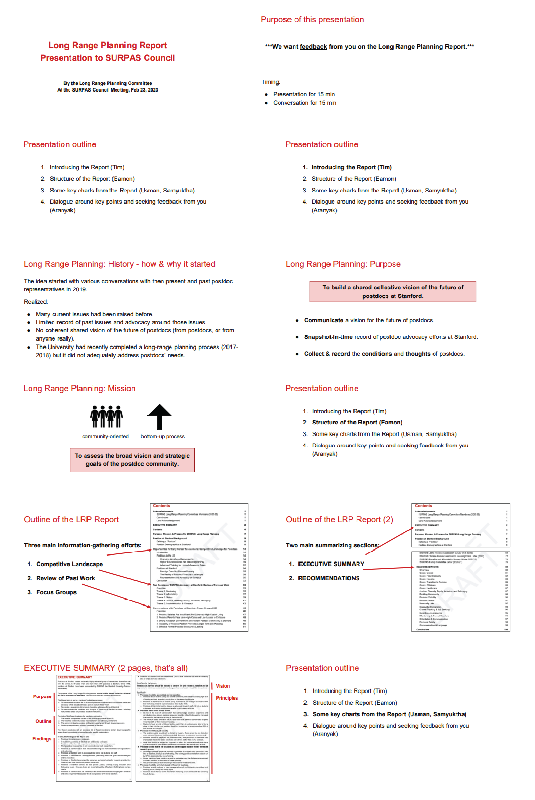
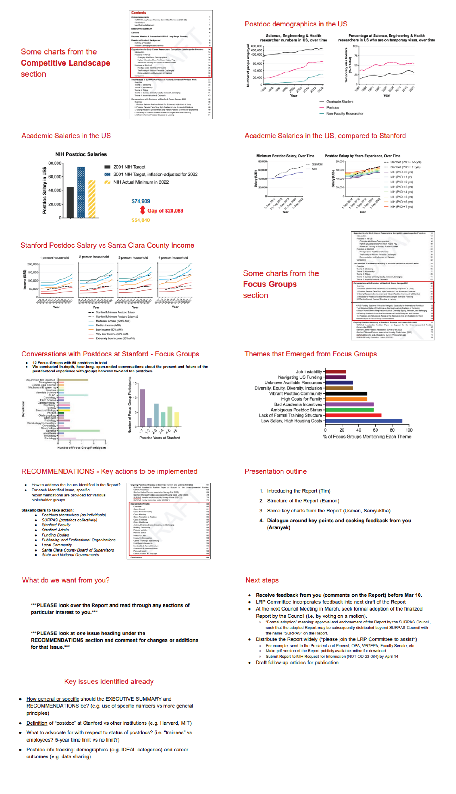

Appendix C
Communication Strategy of Report
Feedback Seeking
Upon completion of a draft of this Report, the Committee sent a copy to members of the SURPAS Leadership Team for feedback on January 27, 2023. An updated draft incorporating suggestions from the Leadership Team was sent to the full SURPAS Council and all postdoc Affinity Groups on February 10, 2023 in advance of discussion at the February 23, 2023 SURPAS Council meeting. At the February Council meeting, members of the Committee gave a presentation on the structure of the Report along with key findings (see slides at the end of this Appendix). The Committee asked for feedback from the full Council and the general postdoc population within the period February 10 to March 10, 2023. Beginning on March 13, 2023, the Committee began incorporating feedback from the general postdoc community for a final draft version sent out to SURPAS Council on March 24, 2023.
Adoption of Report
At the SURPAS Council meeting on March 30, 2023, Committee members proposed a motion for SURPAS Council to officially adopt the Report (motion included at the end of this Appendix). Officially adopting the Report allowed for the SURPAS name and logo to be utilized on the Report and included posting a publicly accessible version online, advertising the Report across social media channels, and empowering the Committee to share the results beyond the postdoctoral community at Stanford as outlined in the following paragraphs.
Report Distribution
A copy of the Report was sent to the Stanford Graduate Student Council and Undergraduate Senate with a request that they officially pass a resolution to bring the report to the agenda of the Stanford Faculty Senate. Committee members presented key findings and recommendations to the Faculty Senate. The full Report was sent to the following administrators directly: (1) Sofie Kleppner, Associate Vice Provost and Associate Dean, head of the Office of Postdoctoral Affairs; Stacey Bent, Vice Provost of Graduate Education and Postdoctoral Affairs; and Kam Moler, Vice Provost and Dean of Research; (2) Lloyd Minor, Dean of the School of Medicine; Debra Satz, Dean of the School of Humanities and Sciences; Jennifer Widom, Dean of the Engineering School; Arun Majumdar, Dean of the Doerr School of Sustainability; Daniel Schwartz, Dean of the School of Education; Jonathan Levin, Dean of the Graduate School of Business; and Jennifer Martinez, Dean of the Law School; (3) Persis Drell, Provost; and Marc Tessier-Lavigne, President; and (4) the Board of Trustees of Leland Stanford Junior University.
A full copy of the Report was sent to postdoc associations across the United States. The Report was submitted to NIH Request for Information NOT-OD-23-084, Re-envisioning U.S. Postdoctoral Research Training and Career Progression within the Biomedical Research Enterprise. The Report was sent to Lightoller LLC, a non-profit dedicated to supporting the people who make up the research enterprise. A copy of the Report was submitted to the Board of Supervisors of Santa Clara County with a request that the County proactively include Postdocs in their outreach to stakeholders within the community during any future discussions about adoption of a new General Use Permit to govern any expansion of Stanford University.
The Committee is directed to write a press release with a link to the report to be sent to local (The Stanford Daily, Embarcadero Media), Regional (San Jose Mercury News, San Francisco Chronicle), and National (The New York Times, The Boston Globe) newspapers.
The Committee is empowered to write follow up articles for publication, describing and advertising the Report more broadly. The strategy outlined here is a minimum of steps to be taken but is not an exhaustive enumeration of all actions the Committee is empowered to make.
Slides presented at February 23, 2023 Council Meeting


Motion to Adopt Long Range Planning Report
Introduced at March 30, 2023 SURPAS Council Meeting
Author: Tim M on behalf of the Long Range Planning Committee
WHEREAS postdocs play an integral role in the research and teaching missions of the university,
WHEREAS postdocs have been self-organized at Stanford since at least 1998, with SURPAS Council being our elected representatives,
WHEREAS there has not been a comprehensive vision of the past, present, and future of postdocs at Stanford,
WHEREAS SURPAS Council created the Long Range Planning Committee as outlined in Article II Section 5 of our bylaws to build a community-oriented vision for the present and future of postdocs at Stanford,
WHEREAS the Long Range Planning Committee released a final Report on the results of that process and has worked to incorporate feedback from the broader postdoctoral community,
WHEREAS Stanford has a commitment to shared governance as demonstrated by the existence of mechanisms for undergraduates and graduate students to raise a topic to the Faculty Senate agenda via a joint resolution by GSC and the Undergraduate Senate,
WHEREAS postdocs have no official mechanism to raise a topic to the Faculty Senate agenda,
THEREFORE BE IT RESOLVED BY THE 2022-2023 SURPAS COUNCIL:
THAT SURPAS Council officially adopts the Report of the Long Range Planning Committee and commits to publicizing it as outlined in Appendix C: Communication Strategy of Report,
THAT adoption of the Report enables the use of the SURPAS name, logo, and social media accounts in publicizing the Report,
THAT we call on GSC and the Undergraduate Senate to pass joint resolutions in support of postdocs to bring the Report to the agenda of the Faculty Senate,
THAT we call on the Faculty Senate to create a structure whereby postdocs are formally able to raise topics on the body’s agenda,
AND BE IT FINALLY RESOLVED THAT we call on Stanford University to work together in good faith with postdocs to achieve the vision laid out in the entirety of the Report and highlighted in the Executive Summary.